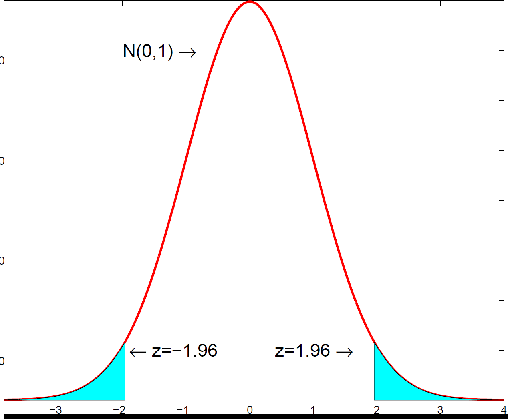
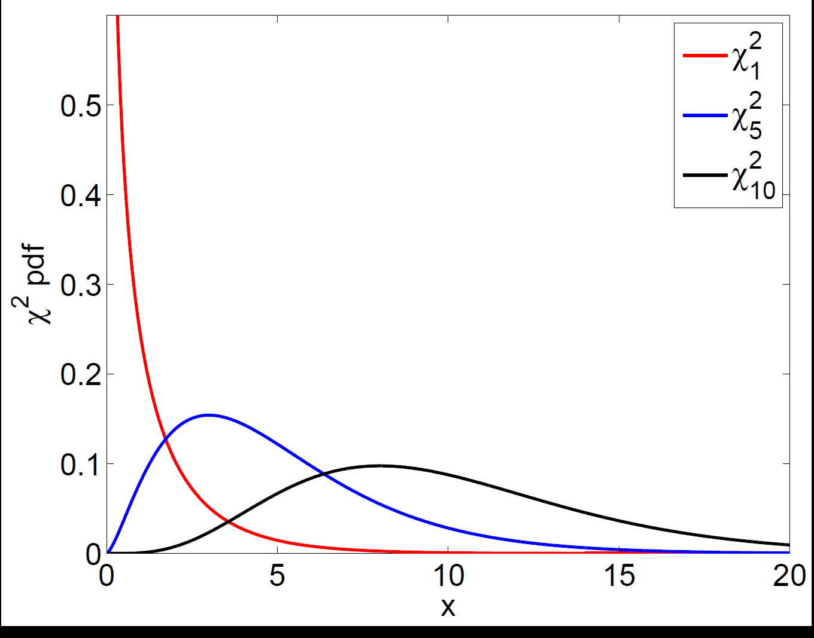

Maximum likelihood chooses the parameter values that make the observed data most probable under an assumed distribution. We maximise the log-likelihood, the estimator has a known asymptotic normal distribution based on the information matrix, and restrictions are tested with the likelihood-ratio test.
How to read these notes
These notes follow the maximum likelihood lecture from a financial econometrics course. They are written for a student who has met OLS and basic probability — random variables, probability density functions and expectations — but has not seen likelihood methods before. The aim is to give the broad idea and enough structure to interpret estimated coefficients and tests, which is exactly what most applied courses ask for.
1. Why we need maximum likelihood
Linear models can be estimated by OLS. But many models in economics and finance are not linear and cannot be handled by least squares: moving-average (MA) models, logit and probit models for binary outcomes, and GARCH models for volatility are all examples. Maximum likelihood (ML) is a more general estimator that covers all of these.
The price for this generality is that ML requires us to know, or assume, the distribution the data are drawn from — for example, that stock returns are normal or Student-\(t\) distributed. With that assumption in hand, ML gives a single recipe for estimating the unknown parameters of almost any model.
Maximum likelihood assumes the data are generated by a known family of distributions \(f(y_i,\beta)\) indexed by a parameter \(\beta\). Once we know \(\beta_0\) we know the whole distribution of \(y_i\). ML is a method for estimating that \(\beta_0\) with good statistical properties.
2. The idea: match the assumed density to the data
Suppose we have a data set \(\{y_i\}_{i=1}^N\) and we want to estimate the unknown density \(g(y_i)\) that generated it. ML assumes this true density is a member of a known family: \(g(y_i)=f(y_i,\beta_0)\) for some parameter \(\beta_0\). For example, if \(y_i\) is a coin flip then \(g(y_i)=\beta_0^{y_i}(1-\beta_0)^{1-y_i}\) is a Bernoulli density, and the unknown \(\beta_0\) is the probability of heads.
The goal, then, is to choose \(\beta\) so that the assumed density \(f(y_i,\beta)\) is as close as possible to the true density \(g(y_i)\). The lecture measures "closeness" using the Kullback-Leibler information criterion:
This object has two crucial properties: \(K(\beta)\ge 0\) always, and \(K(\beta)=0\) exactly when \(f(y_i,\beta)=g(y_i)\). So if there is a unique \(\beta_0\) at which the assumed density matches the truth, then \(\beta_0\) is the unique minimiser of \(K(\beta)\). This is the population target that ML aims at — directly analogous to how the OLS coefficient \(\beta_0\) minimises \(E[(y_i-x_i'\beta)^2]\).
3. From Kullback-Leibler to the likelihood
Splitting the criterion apart shows where the name "maximum likelihood" comes from. Because \(E[\log g(y_i)]\) does not depend on \(\beta\),
minimising \(K(\beta)\) is the same as minimising \(-E[\log f(y_i,\beta)]\), which is the same as maximising \(E[\log f(y_i,\beta)]\). This last quantity is called the (population) likelihood function, and maximising it gives the method its name.
In practice we replace the population expectation with its sample average. The feasible objective is the log-likelihood:
\(\hat\beta_{ML}\) is the value of \(\beta\) that maximises the log-likelihood \(\sum_i \log f(y_i,\beta)\). For independent data this is the log of the joint density of the whole sample, so the intuition often given is that ML picks the parameter that makes the observed sample \((y_1,\dots,y_N)\) as probable as possible.
Notice the parallel with OLS, which chooses \(\beta\) to minimise the sum of squared residuals. ML simply minimises the sample version of the Kullback-Leibler criterion instead. Both are examples of estimators defined as the optimiser of some objective function.
4. The asymptotic distribution and the information matrix
To do inference — t-tests, confidence intervals — we need a sampling distribution for the estimator. The ML estimator has a clean asymptotic distribution centred on the true value:
where \(I_n(\beta_0)\) is the information matrix, defined as the negative expected second derivative of the log-likelihood,
The information matrix measures how sharply curved the log-likelihood is at its peak. A sharply peaked likelihood means the data are very informative about \(\beta\), so the variance \(I_n^{-1}\) is small and the estimate is precise. A flat likelihood means little information and a large variance.
The information matrix is unobserved because it depends on \(\beta_0\), so in practice we use the estimated version \(I_n(\hat\beta_{ML})^{-1}\), evaluating the second derivatives of the log-likelihood at the ML estimate. The square roots of its diagonal entries are the standard errors used for t-tests, which are asymptotically standard normal.

The ML estimator is asymptotically normal, centred on the true parameter with variance equal to the inverse information matrix.5. Testing restrictions: the likelihood-ratio test
Single restrictions, such as "this coefficient is zero", are tested with a t-statistic using the standard errors from the inverse information matrix. Multiple restrictions are tested with the likelihood-ratio (LR) test, which compares the log-likelihood with and without the restrictions imposed:
Here \(\hat\beta_u\) is the unrestricted estimate and \(\hat\beta_r\) is the estimate with the restrictions imposed (for example, excluding some variables). The logic is intuitive: if the restrictions are genuinely valid, imposing them should cost very little in terms of fit, so the two log-likelihoods should be close and LR should be small. Under the null that the restrictions hold,
where \(p\) is the number of restrictions. A large LR statistic is evidence against the restrictions.

The likelihood-ratio statistic is compared against a chi-squared distribution with degrees of freedom equal to the number of restrictions.6. How ML estimates are actually computed
For a linear model with normal errors, the ML estimates can be written down in closed form and coincide exactly with OLS. For most non-linear models, though, there is no formula and the log-likelihood must be maximised numerically. The procedure is, in essence, a sophisticated trial-and-error search:
- Start from an initial guess \(\hat\beta_0\) and compute the log-likelihood there.
- Try a nearby value \(\hat\beta_0+d\); if its log-likelihood is higher, move there, otherwise try a different step \(d\).
- Stop when no nearby value improves the log-likelihood, and declare that point the ML estimate.
Real algorithms differ in how they choose the step direction and when to stop, but the principle is to climb the likelihood surface until you reach its peak. This is why ML estimation occasionally fails to converge or finds a local rather than global maximum — issues that come up constantly when estimating GARCH and other non-linear financial models.
Statistics & econometrics tuition
Maximum likelihood is a turning point in many statistics and econometrics courses. For 1-1 help with the likelihood, the information matrix, LR tests or estimating non-linear models, see statistics tuition, econometrics tuition or financial econometrics tuition.
Free videos: the @economaths channel has a worked maximum likelihood example (Poisson) and related estimation videos.